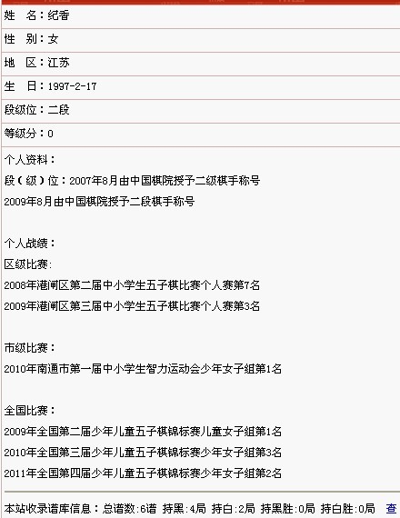

棋手资料馆录制问题，请大家按照格式
#1 棋手资料馆录制问题，请大家按照格式 作者：高飞 发表时间：2011-9-14 13:11:46
棋手资料馆主要是以中国棋院的段位为标准，以国家级和省级以及地方棋院的个人赛成绩来介绍棋手。
比赛的成绩可以包括：2002年至今全国邀请赛或锦标赛，2009年至今的公开赛，以及全国青少年五子棋锦标赛。省级赛事或地方赛事以地方棋院主办为标准。
请大家参照“有志青年”录取的格式，不合格的请修改。
［此帖子已被 高飞 在 2011-9-14 13:12:31 编辑过］
［此帖子已被 高飞 在 2011-9-14 13:13:09 编辑过］
［ 冰雪笑醉 于 2011-9-18 23:20:17 时花20金币送鲜花一朵］
#2 Re:棋手资料馆录制问题，请大家按照格式 作者：高飞 发表时间：2011-9-14 13:18:49
大家可以在论坛上方，登陆的右边“本站特色”里的第一个，“棋手资料馆”增加或者修改。但请依照现在这样的格式。#3 Re:棋手资料馆录制问题，请大家按照格式 作者：三道 发表时间：2011-9-14 15:22:53
看到一个叫李一的家伙，资料时间没按上面的格式，但我觉得，那样写好些。最近取得的成绩在第一行。#4 Re:棋手资料馆录制问题，请大家按照格式 作者：第五象限 发表时间：2011-9-14 15:27:28
写简历的时候 一般都是最近取得的成绩在第一行#5 Re:棋手资料馆录制问题，请大家按照格式 作者：八路 发表时间：2011-9-14 18:45:24
男子六段 和 女子六段 有差别吗？#6 Re:棋手资料馆录制问题，请大家按照格式 作者：高飞 发表时间：2011-9-14 19:37:06
女子6段是怎么来的，不知道凭什么可以到6段。
#7 Re:棋手资料馆录制问题，请大家按照格式 作者：鬼灵 发表时间：2011-9-14 21:14:49
有比赛成绩但没申请段位的要么
#8 Re:棋手资料馆录制问题，请大家按照格式 作者：wuxiao 发表时间：2011-9-15 9:22:12
尝试回答6楼:
根据励精网资料---胡夕六段格:2003年10月第二届全国五子棋邀请赛女子少年与成人混合组冠军，获六段格。
#9 Re:Re:棋手资料馆录制问题，请大家按照格式 作者：掌棋宣传员 发表时间：2011-9-15 9:50:06
引用：没记错的话是女子少年和女子成人混合组冠军,还是四段~
原文由 wuxiao 发表于 2011-9-15 9:22:12 :尝试回答6楼:
根据励精网资料---胡夕六段格:2003年10月第二届全国五子棋邀请赛女子少年与成人混合组冠军，获六段格。
#10 Re:棋手资料馆录制问题，请大家按照格式 作者：高飞 发表时间：2011-9-15 10:02:49
女子组都是最高4段 5段似乎没有。#11 Re:棋手资料馆录制问题，请大家按照格式 作者：离子阵阵雨 发表时间：2011-9-15 14:37:26
吼吼段位证书上个星期刚寄过来。。。激动啊激动啊#12 Re:棋手资料馆录制问题，请大家按照格式 作者：傀儡 发表时间：2011-9-15 18:43:54
羡慕啊羡慕~~~~~#13 Re:棋手资料馆录制问题，请大家按照格式 作者：游戏人间 发表时间：2011-9-16 0:51:45
这个问题我也早想问了。。。段位肯定要按照中国棋院的标准走。那么中国女子棋手有6段吗？目前女子棋手在男子组最好成绩是李非，也只是第九，请问某些人自我标注的6段这种明显错误是否需要管理人员帮助修改呢？#14 Re:棋手资料馆录制问题，请大家按照格式 作者：徐来 发表时间：2011-9-16 6:04:58
米有段位的飘过。。
#15 Re:棋手资料馆录制问题，请大家按照格式 作者：岑小鱼 发表时间：2011-9-18 22:12:09
鉴于目前形势比较-----热火....现在似乎说句话就非常有可能引起误会.
想了半天.只好..顶一个吧...